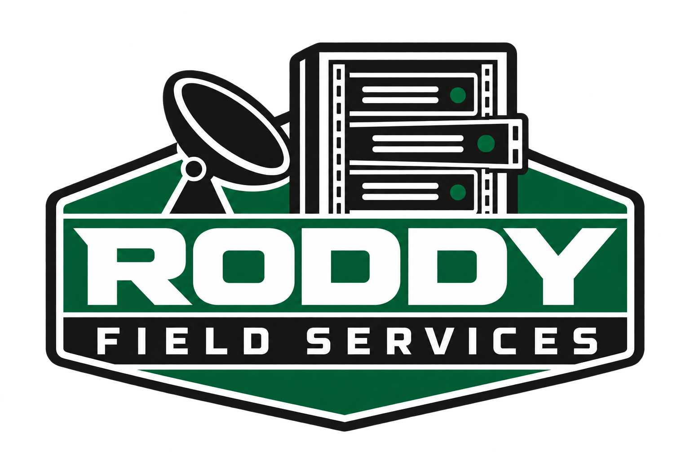
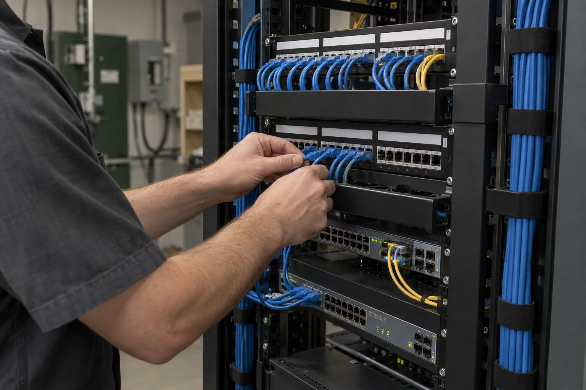
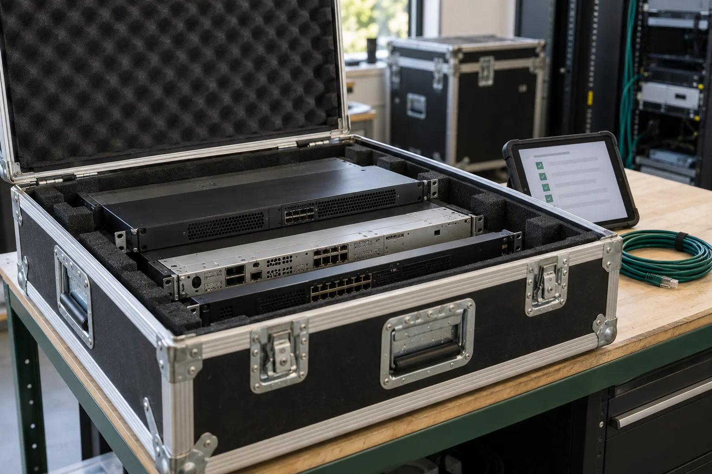

Define the work.
Review the equipment, location, access requirements, project window, and what needs to remain in service.
NATIONWIDE TECHNICAL FIELD SUPPORT
Equipment installation. Telecom & network support. Decommissioning, relocation, and project staffing. Hands-on support and help finding the people your project needs.

New equipment, an upgrade, a site move, or a legacy system coming out. Every project needs someone who understands the work on the ground.
We bring practical experience across telecom, IT, and low-voltage systems to your field scope—from installation and troubleshooting through removal and documentation.

FROM DEPLOYMENT TO HANDOFF
One point of contact for hands-on work across your equipment’s lifecycle, with a clear scope and attention to the systems around it.
One site or a traveling project.
Get support for the work between the plan and the handoff.
Rack-mounted equipment, communications hardware, patch panels, and electronic systems. Installation support guided by your drawings, scope, and site requirements.
RACKS & CABINETS · EQUIPMENT SWAPS · HARDWARE DEPLOYMENTDiscuss an installation ↗Copper and fiber infrastructure, MDF/IDF work, patching, labeling, connectivity troubleshooting, and support for network and communications deployments.
COPPER & FIBER · PATCHING · NETWORK FAULT ISOLATIONDiscuss your network scope ↗Removal of designated retired telecom and IT equipment, rack teardown, and retired cable removal. Assets are identified, documented, and staged according to your scope, with attention to systems staying in service.
EQUIPMENT REMOVAL · RACK TEARDOWN · ASSET DOCUMENTATIONPlan a decommissioning project ↗De-racking, identifying, packing, and staging equipment for its next destination. Support for planned moves, site consolidation, and customer-directed asset recovery.
DE-RACKING · PACKING & STAGING · ASSET HANDOFFPlan an equipment move ↗Onsite eyes and hands for your project team: equipment inventories, serial-number records, cable identification, condition photos, and clear completion notes.
SITE SURVEYS · INVENTORIES · BEFORE & AFTER PHOTOSScope a site visit ↗Need more hands on site? We can help source technicians and field workers for installations, network projects, equipment moves, and decommissioning. Share the skills, headcount, location, pay range, and schedule so we can discuss finding people who fit your scope and site requirements.
TECHNICIAN SOURCING · TRAVELING CREWS · PROJECT STAFFINGDiscuss your staffing needs ↗Good fieldwork starts before the first tool comes out.
Review the equipment, location, access requirements, project window, and what needs to remain in service.
Follow the agreed scope and site procedures. Identify the designated assets and coordinate changes before acting.
Deliver the agreed inventory, photos, completion notes, and equipment handoff so your team knows where things stand.
04 / THE PERSON BEHIND THE WORK
Roddy Field Services is led by James Weeks, with years of contract experience across IT, low-voltage systems, telecom, and electronic installations—alongside eight years in software.
That background connects hands-on equipment work with an understanding of the systems it supports. The focus: helping teams install, support, relocate, and retire infrastructure with dependable work on site—and helping source additional workers when a project needs more hands.
Work with Roddy
Communications racks
& electronic systems
Copper, fiber
& network infrastructure
Technical drawings
& field documentation
Nationwide travel availability.
Tell us where the work needs to happen.
A FEW PRACTICAL DETAILS
Yes. Nationwide travel is part of the service offering. Share the location, expected duration, schedule, and access requirements so we can discuss availability and travel arrangements.
A site location, equipment list or photos, approximate quantities, desired timeline, and the work you need completed. Include any site rules, access restrictions, and required documentation.
Yes. We can discuss a defined field scope alongside your project manager, installation team, or asset-recovery provider, including traveling contract assignments.
Yes. We can help source field workers for a defined project. Send the roles, skills, headcount, work location, schedule, pay range, and travel or per diem details. We’ll discuss candidate sourcing, coordination, and who will handle hiring, onboarding, and supervision before starting.
Our focus is technical fieldwork and physical equipment handling within an agreed scope. Electrical work requiring a license, certified data destruction, and specialized disposal must be coordinated with appropriately qualified providers. Let’s identify those responsibilities before work begins.
LET’S GET TO WORK
Send the scope. Tell us the location.
We’ll discuss the next step.